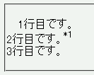
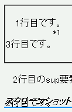

line-heightプロパティが指定された要素の子孫にvertical-alignプロパティを%値で指定した要素が含まれていると、その要素を含む行の配置が乱れる。
<p style="line-height:1.1;">1行目です。<br> 2行目です。<sup style="vertical-align:55%;">*1</sup><br> 3行目です。</p>
1行目です。
2行目です。*1
3行目です。
2行目のsup要素が表示される位置を%値で調節しています。
Moz1.0での表示（標準モード）
WinIE6.0での表示（標準モード）
vertical-alignプロパティを%以外の単位（emなど）で指定すればこの不具合を回避できます。
<p style="line-height:1.1;">1行目です。<br> 2行目です。<sup style="vertical-align:0.55em;">*1</sup><br> 3行目です。</p>
1行目です。
2行目です。*1
3行目です。
WinIE6.0では標準・互換モードともに不具合の発生が確認されました。